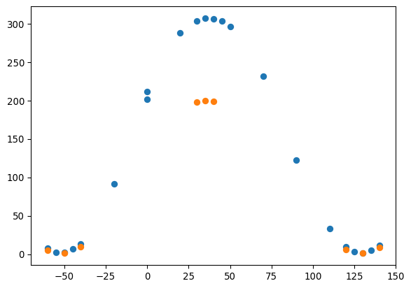
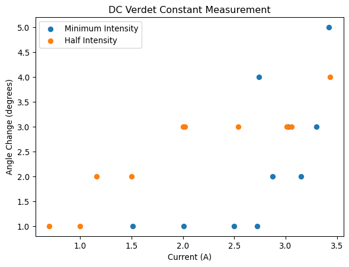
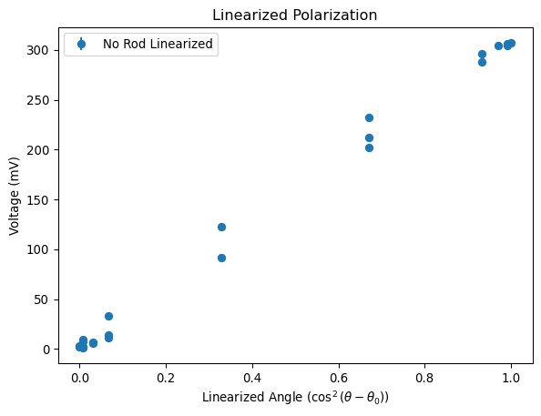
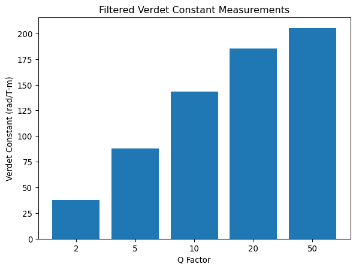

import pandas as pd
import numpy as np
import matplotlib.pyplot as plt
from scipy.optimize import curve_fitLab 5: Faraday
Import libraries
Day 1: Direct Current
Polarization Calibration
Import our data and calculate error
no_rod = pd.read_csv("data/day1/no_rod.csv")
no_rod["error"] = no_rod["change"]/2
with_rod = pd.read_csv("data/day1/with_rod.csv")
with_rod["error"] = with_rod["change"]/2Plot it around 0 (Wrapping between -180 and 180)
angle_no_rod = [x if x < 180 else x-360 for x in list(no_rod["angle"])]
voltage_no_rod = list(no_rod["voltage"])
angle_rod = [x if x < 180 else x-360 for x in list(with_rod["angle"])]
voltage_rod = list(with_rod["voltage"])
plt.figure()
plt.title("Polarization Calibration")
plt.xlabel("Angle (degrees)")
plt.ylabel("Voltage (mV)")
plt.errorbar(angle_no_rod, voltage_no_rod, yerr=no_rod["error"], fmt='o', label="No Rod")
plt.errorbar(angle_rod, voltage_rod, yerr=with_rod["error"], fmt='o', label="With Rod")
plt.legend()
plt.plot()
Note that error is 2 orders of magnitude smaller than the scale of the data, so it is not noticable
DC Verlet
Import the data and convert to radians
verlet1 = pd.read_csv("data/day1/dc_verdet_1.csv")
verlet2 = pd.read_csv("data/day1/dc_verdet_2.csv")Plot the angle change vs intensity (read as current)
plt.figure()
plt.title("DC Verdet Constant Measurement")
plt.xlabel("Current (A)")
plt.ylabel("Angle Change (degrees)")
plt.scatter(verlet1["current"],verlet1["angle change"], label="Minimum Intensity")
plt.scatter(verlet2["current"],verlet2["angle change"], label="Half Intensity")
plt.legend()
plt.show()
Here we are accurate to the about 2 degrees of precision, which is not a whole lot. This will be improved in the AC section.
We can set up some constants to then fit this and find the verlet constant
L = 10e-2 # length in meters
k = 11.1e-3 # Calibration constant in T/A
# convert angle to radians
verlet1["angle change"] = np.radians(verlet1["angle change"])
verlet2["angle change"] = np.radians(verlet2["angle change"])
def dc_verlet_fit(df):
popt, pcov = np.polyfit(df["current"], df["angle change"], 1, cov=True)
slope, intercept = popt
slope_err, intercept_err = np.sqrt(np.diag(pcov))
slope_mod = slope / (L * k)
slope_mod_err = slope_err / (L * k)
return (slope_mod, slope_mod_err), (intercept, intercept_err)
dc_slope1, dc_intercept1 = dc_verlet_fit(verlet1)
dc_slope2, dc_intercept2 = dc_verlet_fit(verlet2)
print("Verlet1:")
print(f" Slope/(L*k): {dc_slope1[0]:.4f} ± {dc_slope1[1]:.4f}")
print(f" Intercept: {dc_intercept1[0]:.4f} ± {dc_intercept1[1]:.4f}")
print("Verlet2:")
print(f" Slope/(L*k): {dc_slope2[0]:.4f} ± {dc_slope2[1]:.4f}")
print(f" Intercept: {dc_intercept2[0]:.4f} ± {dc_intercept2[1]:.4f}")Verlet1:
Slope/(L*k): 25.7736 ± 9.7505
Intercept: -0.0378 ± 0.0301
Verlet2:
Slope/(L*k): 14.6987 ± 2.3216
Intercept: 0.0103 ± 0.0058Overall not good, but we will improve on that value
Day 2: Alternating Current
Polarization Calibration
We repeat the polarization calibration on a smaller scale. Given last day’s data, we can safely assume that the rod does not affect polarization just the intensity, so we only inserted the rod and took data once.
polarization = pd.read_csv("data/day2/polarization.csv")
polarization["error"] = polarization["change"]/2Plot it around 0 (Wrapping between -180 and 180)
angle_day2 = [x if x < 180 else x-360 for x in list(polarization["angle"])]
voltage_day2 = list(polarization["voltage"])
plt.figure()
plt.title("Polarization Calibration")
plt.xlabel("Angle (degrees)")
plt.ylabel("Voltage (mV)")
plt.errorbar(angle_no_rod, voltage_no_rod, yerr=no_rod["error"], fmt='o', label="No Rod")
plt.errorbar(angle_rod, voltage_rod, yerr=with_rod["error"], fmt='o', label="With Rod")
plt.errorbar(angle_day2, voltage_day2, yerr=polarization["error"], fmt='o', label="with Rod Day 2")
plt.legend()
plt.plot()
Here we see a smaller intensity, but that doesn’t matter as we mainly care about the sinusoidal shape here.
we can linearize the curve as follows, plotting \(V\) vs \(\cos^2(\theta - \theta_0)\), as seen from Malus’ Law, just using our empty solonoid
theta_0 = angle_no_rod[np.argmax(voltage_no_rod)]
V_0 = np.max(voltage_no_rod)*1e-3 # will use this later (converted to volts)
linearized_angle = [np.cos(np.radians(x - theta_0))**2 for x in angle_no_rod]
plt.figure()
plt.title("Linearized Polarization")
plt.xlabel("Linearized Angle ($\\cos^2(\\theta - \\theta_0)$)")
plt.ylabel("Voltage (mV)")
plt.errorbar(linearized_angle, voltage_no_rod, yerr=no_rod["error"], fmt='o', label="No Rod Linearized")
plt.legend()
plt.plot()
AC Verdet
Import the data
ac_verdet = pd.read_csv("data/day2/ac_verdet.csv")Here the experiment is in reverse, we know measure the voltage at a fixed angle, and vary the current. This means we need to find the angle corresponding to the measured voltage. The equation is defined as follows:
\[ \Delta V = \Delta \theta \frac{dV}{d\theta} \]
Where \(\frac{dV}{d\theta}\) is the derivative of the voltage found through Malus’ Law. As explained in the lab manual this ends up just being \(V_0\), so we dont need to calculate anything new. This also requires that \(\Delta V\) is in RMS instead of peak to peak, so we convert it. Afterwards we average the values and get the standard deviation as the error.
# Convert Delta V to RMS and Volts instead of mV
V = ac_verdet["Delta V"].mean()*1e-3/(np.sqrt(2))
V_std = ac_verdet["Delta V"].std()*1e-3/(np.sqrt(2))
# Convert Current to Amps
I = ac_verdet["Current"].mean()*1e-3
I_std = ac_verdet["Current"].std()*1e-3
print("AC Verdet Data:")
print(f" Delta V (Pk-Pk): {ac_verdet["Delta V"].mean():.4f} ± {ac_verdet["Delta V"].std():.4f} mV")
print(f" Delta V (RMS): {V:.4f} ± {V_std:.4f} mV")
print(f" Current: {I:.4f} ± {I_std:.4f} mA")AC Verdet Data:
Delta V (Pk-Pk): 2.3616 ± 0.1061 mV
Delta V (RMS): 0.0017 ± 0.0001 mV
Current: 0.2602 ± 0.0021 mANote that our voltage here was measured as a Pk-Pk value, however we are treating it as the change in amplitude at peaks, therefore we only need to convert to RMS by dividing by \(\sqrt{2}\).
We did not have time to get data for every test, so we took our initial 25 points of noisy data, and quantitatively looked at the other methods to see where improvements could be made in the future.
Now we can go and calculate the Verdet constant from this data point, recalling that \(\Delta \theta\) is the same as the DC case. solving for \(\Delta \theta\) and dividing by \(Lk\) gives us the Verdet constant.
dTheta = V / V_0
print(f"Delta Theta: {dTheta:.4f} radians")
C = dTheta/(k*I*L)
C_err = C * np.sqrt( (V_std/V)**2 + (I_std/I)**2 )
print(f"AC Verdet Constant: {C:.4f} ± {C_err:.4f}")Delta Theta: 0.0054 radians
AC Verdet Constant: 18.8349 ± 0.8595We can compare our uncertainty to the noise in our original data as
original_noise = (ac_verdet["Noise Top"]/2+ac_verdet["Noise Bottom"]/2)/2
# This time it is actually pk-pk noise, so divide by 2 to get amplitude
noise_mean = original_noise.mean()*1e-3/(2*np.sqrt(2))
noise_std = original_noise.std()*1e-3/(2*np.sqrt(2))
print(f"Original Noise (RMS): {noise_mean:.4f} ± {noise_std:.4f} mV")Original Noise (RMS): 0.0002 ± 0.0000 mVSadly we did not have enough measurements to beat out noise
Gain
For this section we only have one data point, so we cannot calculate an error, but we can still calculate a value for the Verdet constant, to compare to our other methods.
V_raw = 23.6*1e-3/(np.sqrt(2))
V = V_raw/10 # divide by gain of 10
I = 258.3*1e-3
gain_verdet = (V / V_0)/(k*I*L)
print(f"Gain Verdet Constant: {gain_verdet:.4f}")Gain Verdet Constant: 18.9588We get a fairly similar value here, showing that the gain does not affect the measurement, just the signal to noise ratio, our measurements for the noise tended to be fairly similar to the non gained measurements.
Filter
Now we use a filter to improve our signal to noise ratio. With one measurement at each Q factor, we cannot calculate a standard deviation, so we cannot calculate an error, however it allows us to get a rough idea of how well this method works.
filtered = pd.read_csv("data/day2/filter.csv")
V = filtered["Delta V"]*1e-3/(np.sqrt(2))
I = filtered["Current"]*1e-3
filter_verdet = (V / V_0)/(k*I*L) / (10) # divide by Q factor and gainNow we can display the results as a bar chart
plt.figure()
plt.title("Filtered Verdet Constant Measurements")
plt.xlabel("Q Factor")
plt.ylabel("Verdet Constant (rad/T·m)")
plt.bar(list(map(str,filtered["Q"])), filter_verdet)
plt.show()
There is a chance that there was some parasitic coupling in the filter that caused some issues, as the values do not seem to improve with higher Q factor as expected. Further testing would be required to confirm this. My assumption was the Q factor also amplified the signal, however it seems that it only improves the signal to noise ratio, which means there is a lot of systematic error here that we are not accounting for.